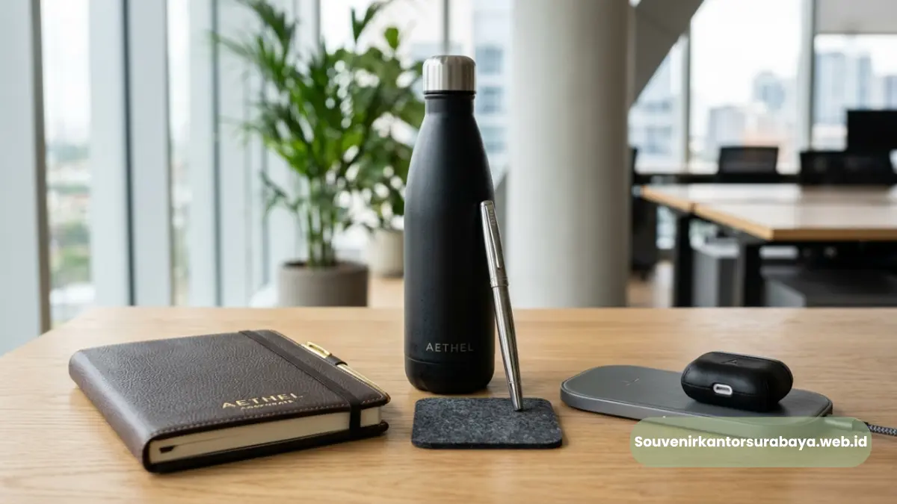

- Apa Itu Merchandise Surabaya dan Mengapa Penting bagi Perusahaan?
- Jenis Merchandise Surabaya yang Paling Diminati Perusahaan?
- Merchandise Fungsional untuk Kebutuhan Harian Kantor
- Merchandise Eksklusif untuk Klien dan Mitra Bisnis
- Bagaimana Cara Memilih Merchandise Surabaya yang Efektif untuk Branding?
- Kapan Waktu Terbaik Memesan Merchandise Surabaya untuk Acara Kantor?
- Kesalahan Umum saat Memesan Merchandise Surabaya
Merchandise Surabaya Premium untuk Branding Korporat Anda
Merchandise Surabaya adalah barang promosi berlogo perusahaan yang dipesan khusus untuk kebutuhan branding, hadiah klien, dan acara korporat.
Produk ini membantu perusahaan memperkuat citra profesional sekaligus menjaga hubungan bisnis.
Pemesanan merchandise Surabaya kini dapat dilakukan dengan cepat melalui souvenirkantorsurabaya.web.id untuk berbagai kebutuhan kantor.
Merchandise Surabaya menjadi kebutuhan rutin bagi perusahaan yang ingin tampil konsisten di depan klien, mitra, maupun karyawan.
- Merchandise Surabaya mencakup produk seperti tumbler, notebook, flashdisk, hingga tas korporat yang dicetak logo perusahaan.
- Produk ini digunakan untuk seminar, gathering, hadiah klien, dan program loyalitas karyawan.
- Kualitas material dan desain custom logo menentukan daya tahan citra merek di mata penerima.
- Pemesanan merchandise Surabaya sebaiknya mempertimbangkan jadwal acara agar produksi dan pengiriman tepat waktu.
- Layanan pemesanan online mempermudah perusahaan menentukan jenis dan jumlah merchandise sesuai anggaran.
Apa Itu Merchandise Surabaya dan Mengapa Penting bagi Perusahaan?
Merchandise Surabaya adalah kategori produk promosi yang diproduksi dan didistribusikan untuk kebutuhan perusahaan di wilayah Surabaya dan sekitarnya, mulai dari alat tulis, peralatan elektronik ringan, hingga aksesori kerja yang dicetak identitas merek.
Produk ini berfungsi sebagai media branding fisik yang dapat digunakan sehari-hari oleh penerimanya, sehingga eksposur logo perusahaan berlangsung lebih lama dibandingkan iklan digital yang cepat berlalu.
Bagi perusahaan, merchandise memiliki peran ganda: memperkuat kesan profesional sekaligus membangun kedekatan emosional dengan klien atau karyawan.
Efek psikologis ini membuat merchandise menjadi alat pemasaran yang relatif hemat biaya namun berdampak jangka panjang.
Perusahaan di Surabaya umumnya memesan merchandise untuk beberapa momen strategis, seperti peluncuran produk baru, seminar internal, kunjungan klien luar kota, hingga penghargaan akhir tahun.
Setiap momen ini menuntut jenis merchandise yang berbeda agar pesan yang disampaikan tetap relevan dengan konteks acara.
Jenis Merchandise Surabaya yang Paling Diminati Perusahaan?
Merchandise yang paling banyak dipesan perusahaan di Surabaya adalah produk fungsional seperti tumbler, power bank, flashdisk, dan notebook custom logo karena tingkat pemakaian hariannya tinggi.
Kategori ini dipilih karena memberikan nilai guna nyata bagi penerima, bukan sekadar pajangan. Semakin sering produk digunakan, semakin besar pula peluang logo perusahaan dilihat berulang kali.
Selain produk fungsional harian, perusahaan juga kerap memesan merchandise premium untuk klien VIP, seperti map kulit sintetis, gift set eksklusif, atau paket seminar kit lengkap.
Kategori ini biasanya digunakan pada momen penting seperti pertemuan bisnis besar atau presentasi kerja sama strategis, di mana kesan pertama sangat menentukan.

Merchandise yang paling banyak dipesan perusahaan di Surabaya.
Merchandise Fungsional untuk Kebutuhan Harian Kantor
Produk seperti tumbler stainless, mouse pad ergonomis, dan flashdisk berkapasitas besar termasuk kategori merchandise yang paling sering dipilih karena praktis dibawa dan digunakan setiap hari. Jenis ini cocok untuk dibagikan dalam jumlah besar pada acara internal maupun eksternal perusahaan.
Merchandise Eksklusif untuk Klien dan Mitra Bisnis
Untuk klien dengan level relasi lebih tinggi, perusahaan biasanya memilih merchandise dengan kualitas material lebih premium, seperti kulit sintetis atau finishing metal, agar kesan eksklusif tetap terjaga saat produk diserahkan langsung dalam pertemuan formal.
Bagaimana Cara Memilih Merchandise Surabaya yang Efektif untuk Branding?
Cara memilih merchandise Surabaya yang efektif adalah dengan menyesuaikan jenis produk dengan target penerima, anggaran perusahaan, dan pesan branding yang ingin disampaikan.
Ketiga faktor ini saling terkait dan menentukan apakah merchandise akan benar-benar digunakan atau justru berakhir tidak terpakai.
Langkah pertama adalah mengenali siapa penerima merchandise tersebut. Merchandise untuk karyawan internal biasanya cukup fungsional dan ekonomis.
Sementara merchandise untuk klien eksternal sebaiknya lebih personal dan berkualitas agar mencerminkan penghargaan perusahaan terhadap relasi bisnis tersebut.
Langkah kedua adalah menentukan anggaran secara realistis sejak awal. Perusahaan dapat mengelompokkan anggaran berdasarkan skala acara.
Misalnya anggaran lebih besar untuk gathering tahunan dibandingkan seminar rutin bulanan, sehingga alokasi dana tetap efisien tanpa mengorbankan kualitas produk.
Langkah ketiga adalah memastikan desain custom logo tercetak rapi dan sesuai brand guideline perusahaan.
Logo yang tercetak buram atau tidak proporsional justru dapat menurunkan kesan profesional yang ingin dibangun melalui merchandise tersebut.
Kapan Waktu Terbaik Memesan Merchandise Surabaya untuk Acara Kantor?
Waktu terbaik memesan merchandise Surabaya adalah dua hingga empat minggu sebelum acara berlangsung, tergantung jumlah pesanan dan kompleksitas desain custom logo.
Pemesanan yang terlalu mepet berisiko membuat proses produksi terburu-buru sehingga kualitas hasil cetak kurang maksimal.
Untuk acara besar seperti gathering tahunan atau seminar dengan ratusan peserta, sebaiknya pemesanan dilakukan lebih awal agar tim produksi memiliki waktu cukup untuk quality control sebelum barang dikirim.
Perencanaan yang matang juga membantu perusahaan menghindari biaya tambahan akibat permintaan produksi kilat.
Kesalahan Umum saat Memesan Merchandise Surabaya
Kesalahan paling umum adalah memilih merchandise hanya berdasarkan harga termurah tanpa mempertimbangkan kualitas material dan daya tahan produk. Merchandise yang cepat rusak justru dapat menurunkan citra perusahaan alih-alih memperkuatnya.
Kesalahan lain adalah tidak menyesuaikan desain logo dengan bidang cetak produk, sehingga hasil akhir terlihat kurang proporsional.
Selain itu, banyak perusahaan juga kurang memperhitungkan waktu produksi, sehingga barang datang mendekati atau bahkan melewati tanggal acara.
Merchandise Surabaya yang tepat dapat menjadi investasi branding jangka panjang apabila dipilih berdasarkan kebutuhan penerima, kualitas material, dan ketepatan waktu produksi.
Perusahaan yang merencanakan pemesanan lebih awal umumnya mendapatkan hasil cetak logo yang lebih rapi dan pengiriman yang lebih terjamin.
Bagi perusahaan di Surabaya yang membutuhkan merchandise berkualitas dengan proses pemesanan yang mudah, souvenirkantorsurabaya.web.id menyediakan berbagai pilihan produk custom logo untuk kebutuhan korporat.

Hawa Nadira
Tim penulis CorporateGifts ID berfokus pada strategi souvenir kantor, merchandise korporat, dan inovasi brand untuk klien B2B.
Keahlian: Branding perusahaan, produksi souvenir, paket event, desain materi promosi.
Artikel Terkait

Block Note Spiral Hard Cover Perusahaan Surabaya Premium
Block note spiral hard cover perusahaan Surabaya adalah buku catatan bersampul keras custom logo premium untuk merchandise korporat.
Baca SelengkapnyaCustom Logo Block Note Spiral Hard Cover untuk Branding Perusahaan
Proses mencetak identitas visual perusahaan pada cover notebook menggunakan teknik hot print, sablon digital, atau UV printing.
Baca Selengkapnya
Souvenir Kantor Surabaya
Panduan komprehensif memilih souvenir kantor berkualitas tinggi untuk meningkatkan brand awareness dan hubungan bisnis.
Baca Selengkapnya